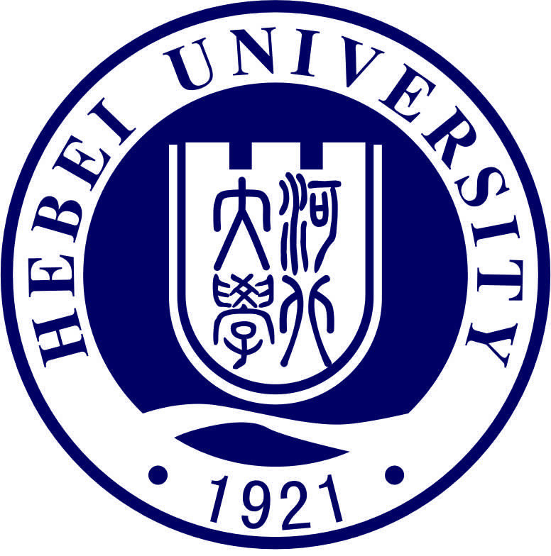
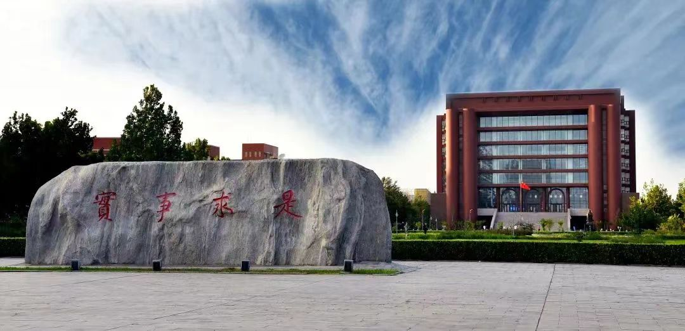

学校简介
河北大学（Hebei University），简称“河大”，坐落于河北省保定市，是教育部与河北省人民政府“部省合建”的重点综合性高校，也是河北省重点支持的国家一流大学建设一层次高校，“教育部留学出国人员培训与研究中心”试点高校；入选国家中西部高校综合实力提升工程、中西部高校基础能力建设工程、卓越工程师教育培养计划、卓越法律人才教育培养计划、国家级大学生创新创业训练计划、全国首批深化创新创业教育改革示范高校。为中西部“一省一校”联盟成员，具有研究生院和推荐免试研究生资格高校。
学校历史
学校始建于1921年，初名天津工商大学，历经天津工商学院、津沽大学、国立津沽大学、天津师范学院、天津师范大学；1960年，改建为河北大学。2000年，河北省技术监督学校并入河北大学。2005年，河北省职工医学院及其附属医院并入河北大学。 截至2024年3月，学校占地2430亩，有五四路校区、七一路校区和裕华路校区；设有85个本科专业，1个国家重点（培育）学科，17个博士学位授权一级学科，44个硕士学位授权一级学科，36种硕士专业学位授权类别，13个博士后科研流动站，1个博士后科研工作站。化学、材料科学、工程学、临床医学、植物与动物科学等5个学科进入ESI世界排名前1%；有教职员工3416人，其中专任教师2148人；有本科生28000余人，博士、硕士研究生11000人。
历史改革
河北大学是一所综合性大学。原建于天津，1970年迁至河北省保定市。校名先后为工商大学、工商学院、津沽大学、天津师范学院、天津师范大学，1960年定名为河北大学。
